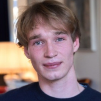

Nima is your learning companion, starting in mathematics.
Nima guides you through a learning session by speaking and listening to you, seeing your textbook and seeing your worked solutions.
Here is a demo of a session:
We are now beta testing Nima with people. Do you want to test it too? Get Nima on TestFlight.
Thanks! We'll reach out shortly to get you in.
We both have years of tutoring experience and studied mathematics, which led us to found our previous startup WisWiz, a learning tool for mathematics with users in the Netherlands, featured in the Dutch newspapers Het Financieele Dagblad and Het Parool.

Philip Pinckaers